Del otro lado de la ventanilla
El nuevo director interino del sistema de agua de Cuautla fue gerente en 2024 de RTB Construcciones de Obra Civil, que firmó 11 contratos con la Comisión Estatal del Agua; 8 empezaron mientras él trabajaba ahí como jefe de estudios y proyectos, según su propia declaración patrimonial y los registros de CompraNet. Llega a un organismo que en 2025 metió a obra 690 mil pesos y pagó más de 10.6 millones en honorarios, cuyo alcalde dijo en acta que los directores llegan con deseos de llenarse las bolsas de dinero, y que de enero a marzo de 2026 no invirtió un solo peso en obra. Cada dato va con su documento y su página.
Quien busca en Google a José Benjamín Hernández Ricardo encuentra un perfil profesional que lo coloca como jefe de Planeación, Estudios y Proyectos del sistema de agua de Temixco. Ese puesto lo dejó el 5 de mayo de 2020, según su propia declaración patrimonial. Desde mediados de noviembre su oficina está en otra parte: es el director interino del Sistema Operador de Agua Potable y Saneamiento de Cuautla, el SOAPSC.
Es el quinto titular desde enero de 2025. Antes que él pasaron Antonio Melo Tovar, Eduardo Dorantes Solís y Eduardo Camacho Barrera, este en junio. Después llegó José de Jesús Jiménez Ventura, el 3 de agosto, y renunció a los tres meses. A ese ritmo, la silla dura menos que una temporada de lluvias. Los cinco nombramientos cruzan tres alcaldías: dos con Jesús Corona Damián, detenido el 30 de mayo de 2026 en el Operativo Enjambre; uno durante las cinco semanas de Nancy Echeverría Guerrero como interina, desde el 23 de mayo; y dos con Salvador Molina Martínez, que tomó protesta el 30 de junio.
La casa, además, llega golpeada. En 2025 el organismo bajó su inversión pública de 35.4 millones a 690,820 pesos. Cerró el año con 22.7 millones en retenciones de ISR e IMSS sin enterar, según su cuenta pública. Encima, el municipio está dentro de la auditoría forense 1417 de la Auditoría Superior de la Federación.
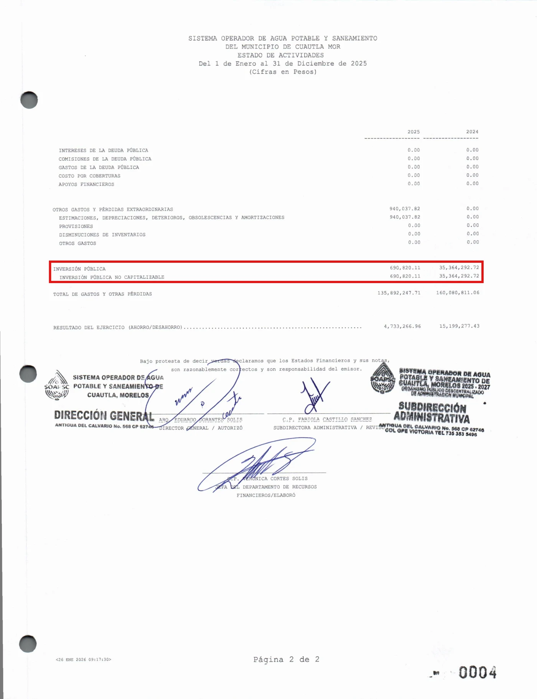
Lo que no faltó fue dinero para otros rubros. La balanza de esa misma cuenta pública registra 10,644,258 pesos en honorarios asimilables a salarios, quince veces lo invertido en obra. El gasto en servicios profesionales sumó 1,888,151 pesos, casi el triple. A eso se añade un documento que este espacio publicó en julio: un vale del organismo por "asesoría" de 50 mil pesos por catorcena, con el nombre de Jonathan Espinoza Salinas en el renglón de "recibí". Entonces era tesorero del ayuntamiento; hoy está detenido por el Operativo Enjambre. La cuenta pública no dice qué se asesoró ni con qué entregables. ¿Cómo se paga tanto en asesoría en un año en que casi no hubo obra?
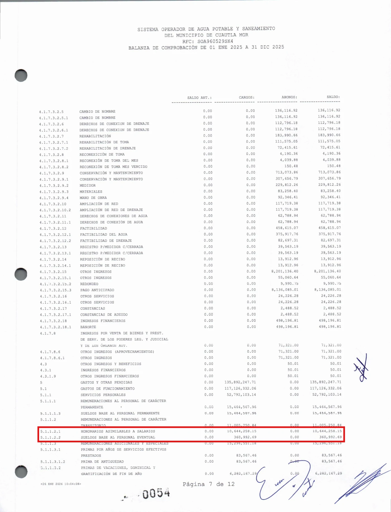
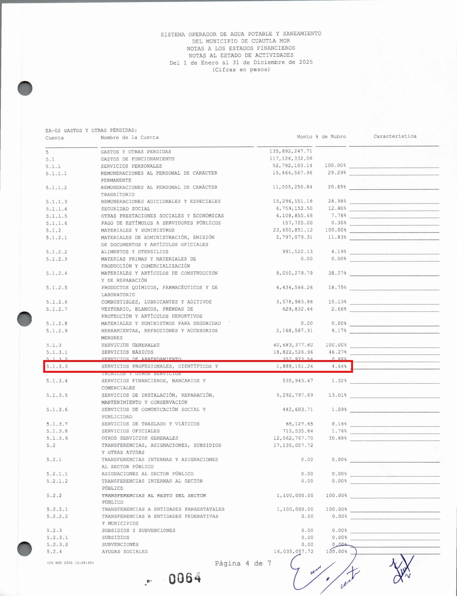
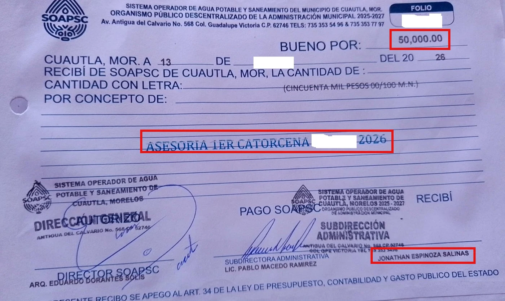
Lo que se dijo en la Junta
La respuesta más cruda no la da un auditor, sino quien presidía la Junta de Gobierno. El 29 de octubre de 2025, en la cuarta sesión extraordinaria, el alcalde Jesús Corona Damián pidió a los directores cuentas de su plantilla "porque mucha gente se fue y empezó a montar personal sin que se autorizara". Minutos después, a propósito de una multa ambiental, dijo de quienes encabezan el organismo: "todos llegan con deseos de trabajar, pero llegan con deseos también de llenarse las bolsas de dinero". Las dos frases constan en el acta que el SOAPSC publica en su portal, dentro de su informe del tercer trimestre.
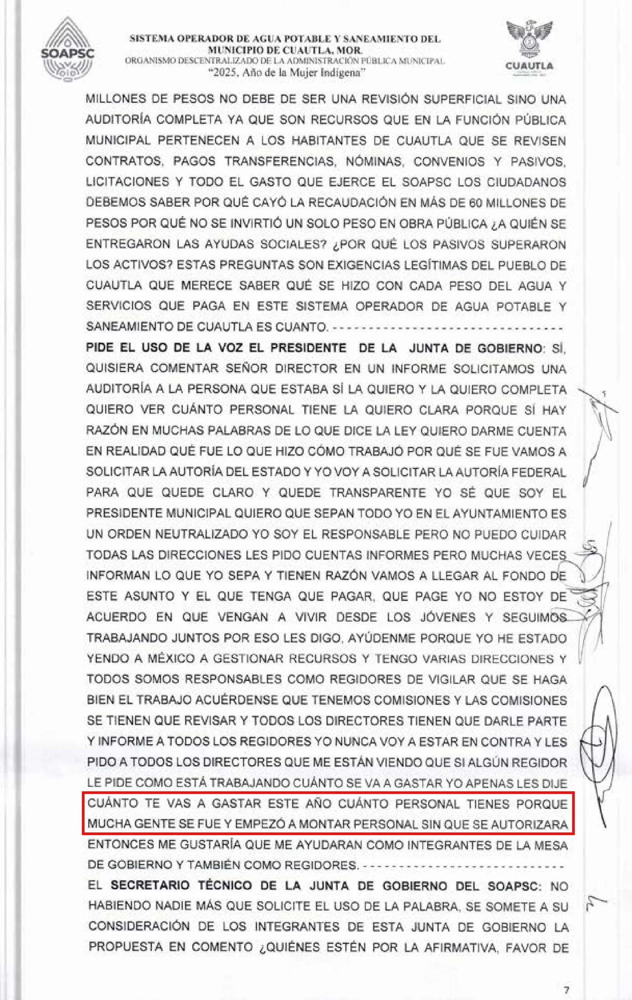
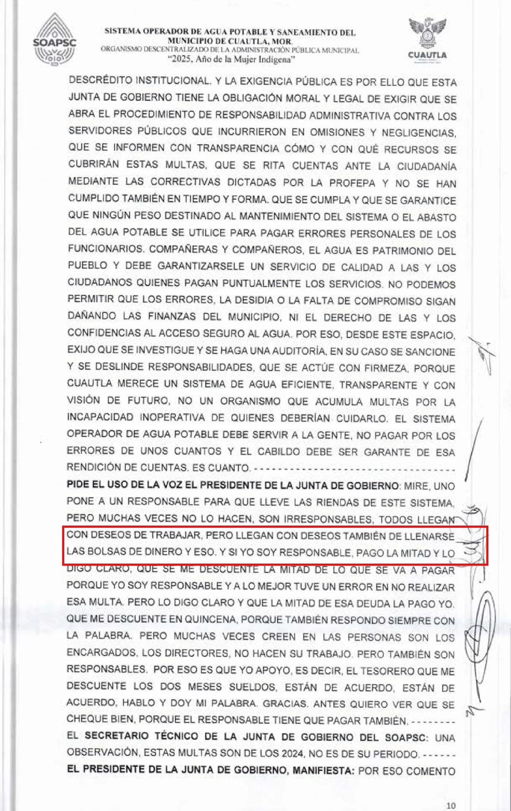
En la misma sesión, la regidora Anita Marysol Ludmilla Sánchez Guerra sostuvo que hasta septiembre no se había ejercido un solo peso en obra y pidió una auditoría de la Entidad Superior de Auditoría y Fiscalización, con vista a la Fiscalía Anticorrupción. El informe se aprobó con cinco votos a favor y uno en contra.
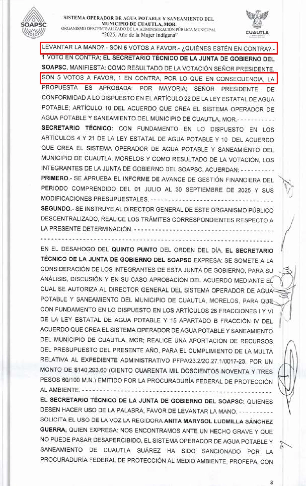
El año siguiente no trajo otra cosa. Del 1 de enero al 31 de marzo de 2026, el estado de flujo de efectivo del organismo registra cero pesos de inversión pública. En esos mismos tres meses, la balanza anota 4,086,852 pesos en sueldos de personal eventual, 11 veces lo de todo 2025, y 665,745 pesos en servicios profesionales, de ellos 252,017 en consultoría administrativa. Por primera vez, lo pagado al personal transitorio rebasó a lo pagado al de base. Hay matices: los honorarios bajaron a 638,663 pesos en el trimestre, es un solo corte y parte del personal eventual puede ser operativo. Lo que no aparece, otra vez, es la obra. Ese trimestre todavía corresponde a la gestión de Corona. De lo que va con Echeverría y con Molina no hay aún un solo informe en el portal del organismo: al 16 de noviembre, el último corte publicado es el del 31 de marzo de 2026.
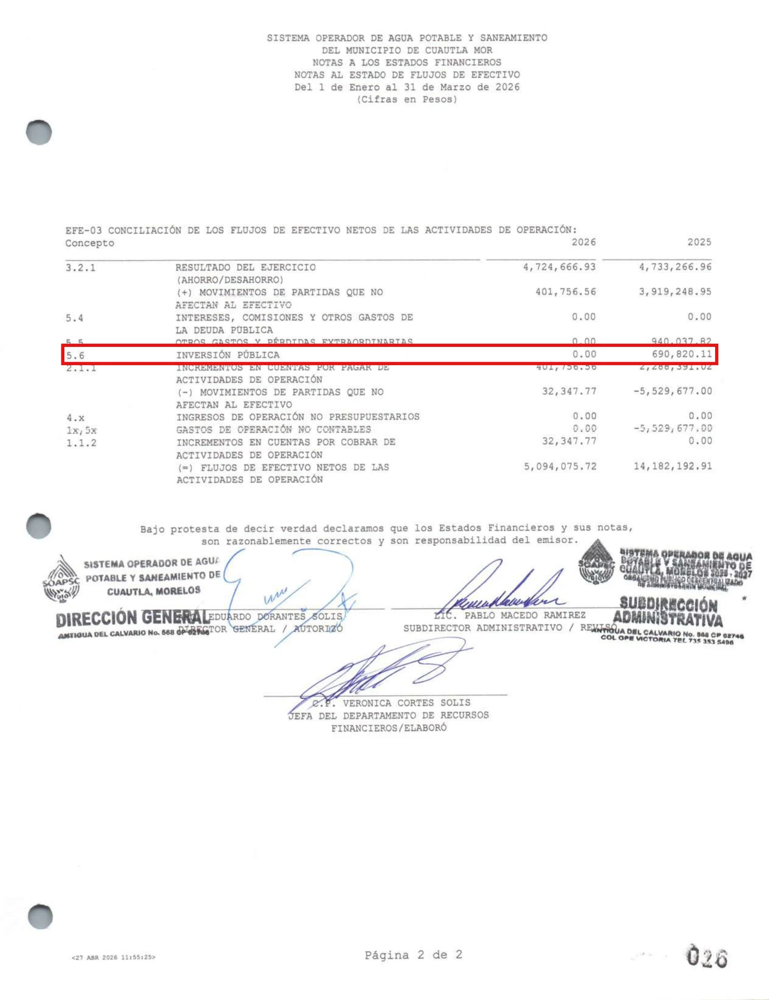
Todos llegan con deseos de trabajar, pero llegan con deseos también de llenarse las bolsas de dinero.
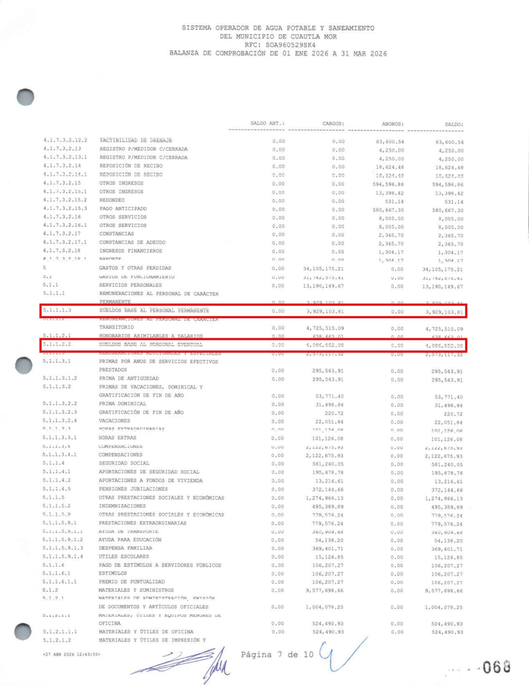
Lo que declaró
La declaración de modificación que registró en la Plataforma Digital Nacional el 3 de noviembre de 2025 cuenta una carrera técnica. Es ingeniero civil por el Tecnológico de Zacatepec, con maestría en administración de la construcción, y empezó su carrera pública en 2008 en la antigua Comisión Estatal del Agua y Medio Ambiente, donde fue jefe del departamento de alcantarillado sanitario. Del 16 de octubre de 2012 al 31 de enero de 2016 fue jefe de departamento en la Comisión Estatal del Agua, con una función descrita así: "supervisión y elaboración de estudios y proyectos". Después pasó por la jefatura de planeación del SAPAC, en Cuernavaca, y por la de Temixco, que dejó en 2020.
Luego viene la chamba en el sector privado. Del 1 de febrero al 31 de octubre de 2024 fue gerente corporativo de RTB Construcciones de Obra Civil. El 4 de noviembre, cuatro días después, tomó posesión como subdirector de proyectos de la Comisión Estatal del Agua, en la Dirección General de Planeación y Gestión. Su función principal, según el mismo documento, es la "revisión y elaboración de proyectos". Para un organismo con cuatro titulares en 22 meses, es un currículum difícil de objetar.
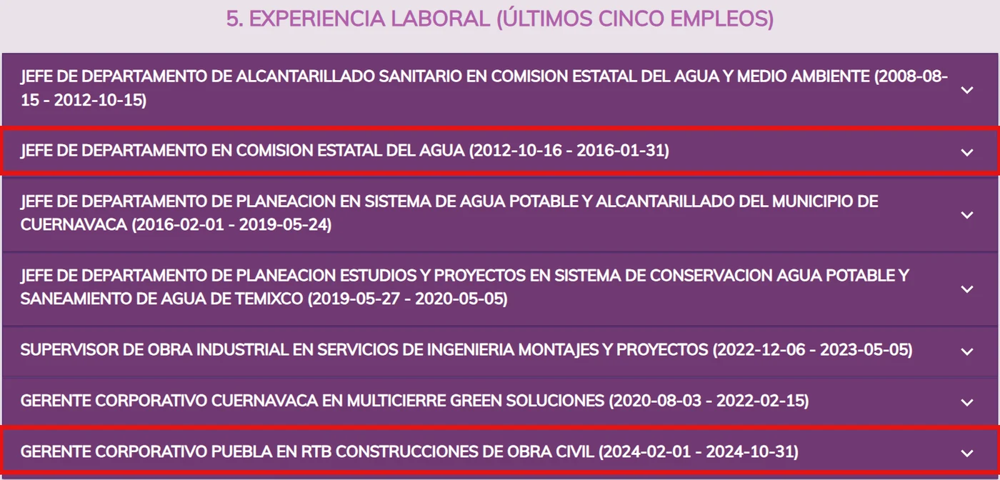
La contratista
RTB Construcciones de Obra Civil tiene el RFC RCO111207JD7 y domicilio en Cuernavaca. En los registros de CompraNet que concentra QuienEsQuien.wiki aparece con 19 contratos entre 2013 y 2020, por 23,471,818 pesos. Once de ellos los firmó con la Comisión Estatal del Agua de Morelos, por 9,445,360 pesos: rehabilitación de pozos en Tetillas y Tilzapotla, ampliaciones de agua potable y proyectos ejecutivos de alcantarillado.
George Stigler explicó en 1971 por qué la frontera entre el que vigila y el vigilado se desgasta sin necesidad de villanos. Para Stigler, el que conoce una industria por dentro es el candidato natural para supervisarla, y por la misma razón carga sus relaciones. Su teoría no pide prohibir la puerta giratoria; pide saber cuándo gira.
Lo que no está en el expediente
Hay datos que juegan a favor del nuevo director. De los 11 contratos con la Comisión, 7 se adjudicaron por licitación pública, 3 por invitación a cuando menos tres personas y solo 1 por adjudicación directa. En el ámbito federal, según el sistema de contrataciones de la Plataforma Digital Nacional, la empresa concursó en 23 procedimientos y ganó uno, un tanque elevado para Conagua en 2018. Tampoco aparece ningún contrato suyo con la Comisión después de 2017, ni con el SOAPSC o el sistema de Temixco, en las bases consultadas. El vínculo, por último, lo declaró él mismo en un documento público.
Falta, además, un número que no tengo: qué parte de todo lo que la Comisión contrató en esos años representó RTB. Sin esa base, la proporción que sigue mide a la empresa, no al organismo. Tampoco consta que él haya propuesto, revisado o supervisado uno solo de esos contratos, y en su declaración reporta cero participaciones en empresas. No es afirmación de este texto que lo haya hecho.
Las fechas
De los 11 contratos de RTB con la Comisión Estatal del Agua, 8 empezaron entre julio de 2013 y agosto de 2015. Durante esos meses, él era jefe de departamento de estudios y proyectos en esa misma Comisión. Ocho de once. Suman 6,020,212 pesos, el 63.7% de lo que la empresa le cobró. Dos de esos ocho eran proyectos ejecutivos de alcantarillado sanitario: el de Los Limones, de octubre de 2013, por invitación a tres, y el de Tehuixtlera, de agosto de 2015, por licitación. Desde noviembre, él encabeza el organismo que contrata las obras del agua de Cuautla.
La Ley General de Responsabilidades Administrativas llama conflicto de interés a "la posible afectación del desempeño imparcial y objetivo" de un servidor público "en razón de intereses personales, familiares o de negocios". Su artículo 58 pide a quien esté en ese caso que lo informe a su superior y solicite que lo excusen de atender, tramitar o resolver esos asuntos. Esa solicitud, si existe, es un papel que se puede pedir por transparencia.
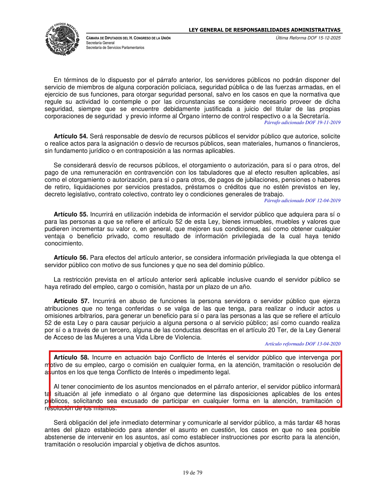
¿Quién va a revisar los planos de quien los revisaba?
- Plataforma Digital Nacional, sistema de declaraciones (S1), proveedor Secretaría Ejecutiva del Sistema Anticorrupción del Estado de Morelos. Declaración de modificación de José Benjamín Hernández Ricardo, registrada el 3-nov-2025, consultada el 13-nov-2026: plataformadigitalnacional.org/declaraciones
- QuienEsQuien.wiki (datos de CompraNet). Ficha de RTB Construcciones de Obra Civil, S.A. de C.V.: quienesquienwiki.sociedad.info/es/empresas/rtb-construcciones-de-obra-civil-sa-de-cv
- QuienEsQuien.wiki. Los 19 contratos de la empresa, 2013-2020: quienesquienwiki.sociedad.info/es/buscador?tipo-entidad=contract&proveedor=rtb-construcciones-de-obra-civil-sa-de-cv&collection=contracts
- QuienEsQuien.wiki. Ejemplo de contrato con la Comisión Estatal del Agua, unidad compradora 917021996 (rehabilitación del pozo Tilzapotla, 2013): quienesquienwiki.sociedad.info/es/contratos/IO-917021996-N105-2013-463507
- Plataforma Digital Nacional, sistema de contrataciones (S6), procedimientos federales 2015-2023: plataformadigitalnacional.org/contrataciones
- SOAPSC, Cuenta Pública Anual 2025 (entregada a la ESAF, folio 224). Columna "El agua que se cobra y no se repara", 45 Digital Noticias, 16-ago-2026.
- SOAPSC, Cuenta Pública Anual 2025: Estado de Actividades, inversión pública 690,820.11 y 35,364,292.72 pesos (p. 4); balanza de comprobación, cuenta 5.1.1.2.1, honorarios asimilables a salarios, 10,644,258.15 pesos (p. 54); gasto por capítulo, 5.1.3.3, servicios profesionales, científicos y técnicos, 1,888,151.24 pesos (p. 64).
- 45 Digital Noticias, "El pasado que se sienta en la tesorería", 29-jul-2026, vale de "asesoría" a nombre de Jonathan Espinoza Salinas: 45digitalnoticias.github.io/columnas/el-pasado-que-se-sienta-en-la-tesoreria.html
- SOAPSC, acta de la cuarta sesión extraordinaria de la Junta de Gobierno, 29-oct-2025 (pp. 71-76 del acta, dentro del Informe de Avance de Gestión Financiera del tercer trimestre de 2025): soapsc.gob.mx/obligaciones-generales
- SOAPSC, balanza de comprobación del 1-ene al 31-mar-2026 (pp. 8 y 10) y estado de flujo de efectivo al 31-mar-2026: soapsc.gob.mx/obligaciones-generales
- SOAPSC, Cuenta Pública Anual 2025, balanza, personal permanente y transitorio (p. 54).
- Ley General de Responsabilidades Administrativas, artículo 3, fracción VI, y artículo 58; última reforma DOF 15-12-2025: diputados.gob.mx/LeyesBiblio/ref/lgra.htm
- Auditoría Superior de la Federación, Modificaciones al Programa Anual de Auditorías para la Fiscalización Superior de la Cuenta Pública 2025, Diario Oficial de la Federación, 5-jun-2026 (auditoría 1417, Municipio de Cuautla).
- Noticias de Cuautla, 10-ene-2025, nombramiento de Antonio Melo Tovar: noticiasdecuautla.mx/asignan-nuevo-titular-de-soapsc
- Central de Noticias, 18-oct-2025, nombramiento en el SOAPSC: centraldenoticias.mx/18/10/2025/municipios/zona-oriente/cuautla/aprueba-junta-de-gobierno-del-soapsc-descuentos-y-nuevo-nombramiento
- Revista Cauce Legal, 19-jun-2026, nombramiento de Eduardo Camacho Barrera: revistacaucelegal.com/2026/06/19/aprueba-junta-de-gobierno-del-soapsc-nombramientos-clave-para-fortalecer-su-operacion-y-transparencia
- La Unión de Morelos, 4-ago-2026 y 13-ago-2026, designación y ratificación de José de Jesús Jiménez Ventura: launion.com.mx/morelos/cuautla/noticias/297629-designan-a-jesus-jimenez-como-encargado-del-soapsc.html y launion.com.mx/morelos/cuautla/noticias/298084-ratifican-nombramiento-de-director-general-del-soapsc.html
- George J. Stigler, "The Theory of Economic Regulation", The Bell Journal of Economics and Management Science, vol. 2, núm. 1, 1971, pp. 3-21. DOI: 10.2307/3003160
Las ligas van a la vista para que cualquiera compruebe por su cuenta. Si alguna dejó de resolver, escríbenos y la reponemos.
SRVO